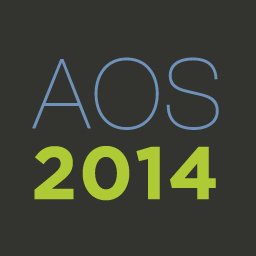

Evento Agile Open Spain 2014
El próximo mes de Junio, durante los días 6 y 7, se celebrará en Valladolid el Agile Open Spain 2014.
El organizador del evento es la asociación Agile Spain, y el formato será de Open Space, y para el que no conozca este formato, se trata de un foro abierto donde se proponen temas que luego serán discutidos por los asistentes, quedando la participación abierta a todo el que así lo desee, ya sea simplemente esuchando o compartiendo su opinón. Básicamente se busca la participación de todos los asistentes.
El registro puede realizarse aquí.
Vía Barrapunto